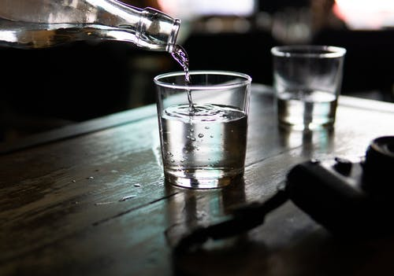
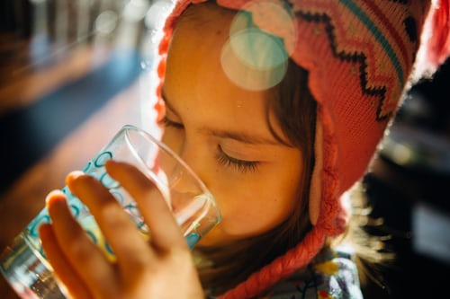
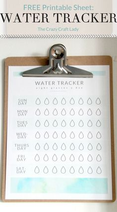
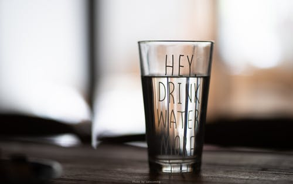
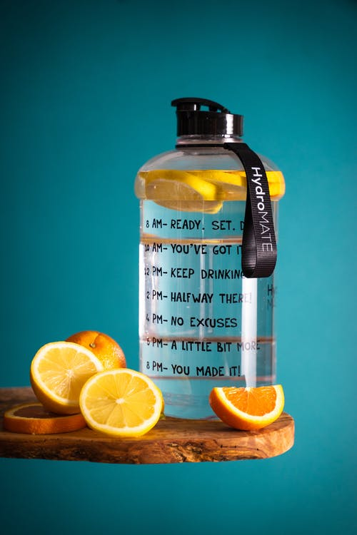
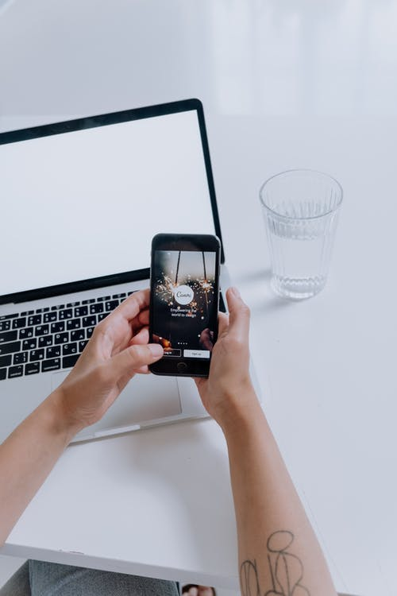
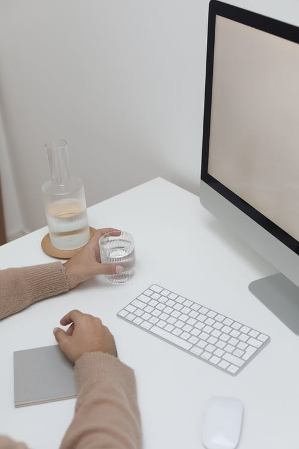

logo
Avator

logo
Avator
Drink Water
If You're Thirsty, You're Already Dehydrated

Hydrate yourself. You need water to regulate your body temperature and allow nutrients to travel to your organs and tissues.Some say we need eight glasses a day, others say it’s more like ten. Another accepted number is around three liters/13 cups a day for men and a bit over two liters/nine cups a day for women. Going by these numbers, you need to drink less than a cup every hour. That sounds manageable, right? But nothing is set in stone. If you want to build a habit of drinking more, test and see what works best for you. Every body is different and what works for someone else might not be ideal for you. An approximate number is good to keep in mind, but many other factors influence how much water you really need.
How to get started
If you don’t have the habit of drinking a lot, the idea of gulping down two or three liters might seem daunting. And that’s totally normal. After all, you are not used to it. Yet. You might not even feel like you need to drink more, because your body is accustomed to living on just a few cups a day.But give drinking more a try. You’ll see how positively it will impact your life. The most important thing is that you give yourself time to build this new habit and be patient with yourself if on some days you might forget to drink or not drink you can’t do it from day one.
Now, let’s look at how to make drinking a bigger part of your everyday life.
1. Add Drinking Water to Your Morning and Evening Routine
Whether you’ve thought about it or not, you most likely have some form of a morning routine. Whether you get up, work out, make a healthy breakfast and head off to work, or roll out of bed late, have some coffee and then rush off to the office, there are some things you probably do every day.Adding an extra glass of water to this routine is a good start. You could begin by drinking a glass of water right when you get out of bed. Or immediately after your shower. Or while brewing your morning coffee or tea. If you feel like replacing your morning joe with water, you can do that too. But if you feel like you need that extra kick to get started, just add the water to your routine.The most important thing is that you do it at the same time every day. Pick a timing and stick with it. That way you’ll remember and be on track from the start of the day. You can also make it an enjoyable ritual. If you have a warm cup of herbal tea before bed, you’ll feel relaxed, sleep well and make sure your body is hydrated.
2. Use Time-Based Goals and Track Your Progress
It can be hard to know how much we drink throughout the day if we don’t set goals and track our progress. The great news is, there are easy ways to do it. The simplest is to get a large water bottle and mark how much you want to drink every hour. Put visible indicators on your bottle and you’ll be able to see how much you’ve had and if you’re on track. You could also draw the number of glasses you want to drink per day on a piece of paper and keep it with you. Every time you finish a glass, cross it off.Again, you can set a goal of one glass per hour, three before and three after lunch, or whatever works for you. The satisfaction of checking off those glasses is amazing. If you’re into more high-tech solutions than ticking off little doodles of glasses, you’re in luck, because there are several great apps for tracking your drinking.If you’re really into the whole IoT thing, you can even get the Hidrate Spark, a smart water bottle that tracks every sip you take, reminds you to have drinks and sends all your data to your phone.
3. Create Triggers and Set Alarms
This goes along the lines of the point above. Several of the apps I mentioned can send you reminders to drink regularly. So even if you forget, your phone won’t. Especially at the beginning that’s great. It helps you build your new habit and you don’t have to worry about getting off track. Try not to rely too heavily on these techy helpers though. You want to get to the point where you remember to drink on your own and don’t need the help of your phone. That’s where mental triggers come in. That could mean you have a drink every time you take a break from work, go to the bathroom or pick up your phone. Whatever works for you. Doing this will help you include little sips of water here and there and make it so much easier for you to achieve your daily water goal. Maybe even without noticing it!
4. Get a Beautiful Bottle
5. Make it a Game
6. Make it Easy
SCHEDULING DRONES © 2021 ALL Rights Reserved